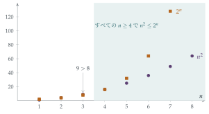

STEP III 2015、第2問
先に進む前に問題を読んでおこう。問題は STEP Support Programme の問題データベースにある： step.maths.org/questions/15-s3-q2
導入
大学で最初に学ぶ解析学（analysis）の講義に出てくる命題は、ほとんどすべてが同じ形をしている。すなわち、「何かが存在して、すべての何々について、ある条件が成り立つ」という形である。「数列が \(L\) に収束する」とは、任意の許容誤差 \(\varepsilon > 0\) に対して、ある番号 \(N\) が存在して、すべての \(n \geq N\) について \(|a_n - L| < \varepsilon\) となる、という意味である。この形を自在に扱える学生にとって解析学は刺激的であり、そうでない学生にとっては不可解なものになる。
この問題は、そうした語り方への穏やかで見事に設計された入門である。問題は「最終的に小さい（eventually smaller than）」という新しい概念を一つだけ定義し、それについて真か偽かを問う問いを四つ投げかける。四つのうち一つは偽であり、それが偽である理由こそ、量化子（quantifier）を含む命題を初めて否定（negate）しようとする大学一年生の大半が陥る罠そのものである。
取りかかる前に
定義をゆっくり読むこと。\((s_n) \leq (t_n)\) は、すべての \(n\) について \(s_n \leq t_n\) であるという意味ではない。ある番号から先ではそれが成り立つ、という意味である。最初のいくつかの項はまったく関係がない。どちらの数列の最初の百万項を変えても、\((s_n) \leq (t_n)\) が成り立つかどうかには影響しない。
定義には「ある正の整数 \(m\) が存在して」という語句が含まれている。\((s_n) \leq (t_n)\) を証明するには、正確には何を示せばよいか。それが偽であることを証明するには、何を示さなければならないか。
証明するには、適切な \(m\) を具体的に挙げ、そのうえですべての \(n \geq m\) で条件が成り立つことを示せばよい。反証するには、どの \(m\) もうまくいかないこと、すなわち誰がどんな \(m\) を提案しても、ある \(n \geq m\) で \(s_n > t_n\) となることを示さなければならない。この二つ目の形は小問 (ii) のために覚えておくこと。
順を追って解く
段階 1 一次関数と二次関数の比較
小問 (i) は、最終的に \(1000n \leq n^2\) となるかを問うている。\(n > 0\) であるから、これは \(1000 \leq n\) と同値である。よって \(m = 1000\) とすればよい。実際、すべての \(n \geq 1000\) について \(n^2 = n \cdot n \geq 1000 n\) である。この命題は真である。■
最初の \(999\) 項では \(1000n\) が \(n^2\) よりはるかに大きいが、それは問題にならない。「最終的に」は有限個の項を無視するのである。
段階 2 「最終的に小さい」は通常の「小さい」と同じように振る舞うか
通常の数では、\(a \leq b\) でないならば \(b < a\) であり、したがって当然 \(b \leq a\) である。小問 (ii) は、この新しい関係についても同じことが成り立つかを問うている。
「\((s_n) \leq (t_n)\) ではない」とは実際には何を意味するか。先頭に「ではない」を付けずに、すべて書き下してみよ。
「ある \(m\) が存在して、すべての \(n \geq m\) について \(s_n \leq t_n\)」という命題が偽になるのは、ちょうど次の場合である。
任意の \(m\) に対して、ある \(n \geq m\) で \(s_n > t_n\) となるものが存在する。
言い換えれば、\(s_n > t_n\) が無限回起こるということである。これは「ある番号以降つねに \(s_n > t_n\)」よりもはるかに弱い。二つの数列は大小を入れ替え続けるかもしれないのである。
大小を永遠に入れ替え続け、どちらも他方より最終的に小さくはならないような、正の数からなる二つの数列を見つけよ。
\(s_n = 2 + (-1)^n\) とおくと \(s_n = 1, 3, 1, 3, \ldots\) であり、すべての \(n\) について \(t_n = 2\) とする。任意の \(m\) に対して \(s_n = 3 > 2 = t_n\) となる偶数 \(n \geq m\) が存在するので、\((s_n) \leq (t_n)\) ではない。しかし同様に、任意の \(m\) に対して \(t_n = 2 > 1 = s_n\) となる奇数 \(n \geq m\) が存在するので、\((t_n) \leq (s_n)\) でもない。この命題は偽である。■
段階 3 連鎖させる
小問 (iii) では、二つの仮定それぞれに対して一つずつ、合わせて二つの \(m\) の値が与えられる。それらは異なるかもしれない。結論にはどちらを使えばよいか。
すべての \(n \geq m_1\) について \(s_n \leq t_n\) であり、すべての \(n \geq m_2\) について \(t_n \leq u_n\) であるとする。\(n \geq \max(m_1, m_2)\) ならば両方の不等式が成り立つので、\(s_n \leq t_n \leq u_n\) である。よって \(m = \max(m_1, m_2)\) とすればよく、この命題は真である。■
二つのしきい値のうち大きい方をとるというのは、解析学で何百回も使うことになる手法である。たとえば、二つの収束（converge）する数列の和が収束することもこうして証明する。
段階 4 二次関数と指数関数の比較
まずいくつかの値を試してみる。
| \(n\) | 1 | 2 | 3 | 4 | 5 | 6 | 7 | 8 |
|---|---|---|---|---|---|---|---|---|
| \(n^2\) | 1 | 4 | 9 | 16 | 25 | 36 | 49 | 64 |
| \(2^n\) | 2 | 4 | 8 | 16 | 32 | 64 | 128 | 256 |
したがって \(n^2 \leq 2^n\) は \(n = 1, 2\) では成り立ち、\(n = 3\) では成り立たず、\(n = 4\) 以降は成り立ち続けるように見える（図 2.1.1）。自然な予想は \(m = 4\) である。
すべての \(n \geq 4\) について \(n^2 \leq 2^n\) であることを数学的帰納法（induction）で証明するには、\(n^2 \leq 2^n\) から \((n+1)^2 \leq 2^{n+1} = 2 \cdot 2^n\) を導く必要がある。\((n+1)^2\) と \(n^2\) の間にどのような不等式があれば、この段階がうまくいくか。
\((n+1)^2 \leq 2n^2\) がわかれば十分である。そうすれば \((n+1)^2 \leq 2n^2 \leq 2 \cdot 2^n\) となるからである。ここで \(2n^2 - (n+1)^2 = n^2 - 2n - 1 = (n-1)^2 - 2\) であり、これは \(n \geq 3\) のとき正である。よって次のようになる。
基底段階：\(4^2 = 16 = 2^4\)。
帰納段階：\(n \geq 4\) かつ \(n^2 \leq 2^n\) ならば、\((n+1)^2 \leq 2n^2 \leq 2^{n+1}\)。
したがってすべての \(n \geq 4\) について \(n^2 \leq 2^n\) であり、この命題は \(m = 4\) として真である。■

振り返り
「存在する」を証明するとは、具体的に挙げることである。小問 (i)、(iii)、(iv) では、証明は \(m\) を挙げてそれを確かめることであった。
否定すると量化子が入れ替わる。「（ある \(m\) が存在して、すべての \(n \geq m\) について \(P\)）ではない」は「すべての \(m\) に対して、ある \(n \geq m\) が存在して、\(P\) でない」となる。これを正しく扱えるかどうかを試しているのが小問 (ii) である。
新しい関係が古い関係と同じように振る舞うとは限らない。「最終的に小さい」は \(\leq\) と同様に推移的（transitive）であるが、\(\leq\) とは異なり、すべての数列の組を比較できるわけではない。
背後にある数学
ニュートン（Newton）とライプニッツ（Leibniz）以後のおよそ150年間、数学者たちは極限（limit）や無限小（infinitesimal）を見事に使いこなしたが、それが正確に何を意味するのかを述べることはできなかった。1734年、バークリー（Berkeley）司教は無限小を「消え去った量の亡霊」と嘲笑したが、彼の指摘にも一理あった。その修復は19世紀に行われた。コーシー（Augustin-Louis Cauchy）、続いてワイエルシュトラス（Karl Weierstrass）が、「限りなく近づく」という曖昧な言い方を、「任意の」と「存在する」から組み立てられた命題に置き換えたのである。現代の定義 \[a_n \to L \iff \text{任意の } \varepsilon > 0 \text{ に対してある } N \text{ が存在して、} |a_n - L| < \varepsilon \text{ がすべての次で成立：} n \geq N\] は、先頭に量化子が一つ多いことを除けば、この問題の定義とまったく同じ形をしている。これは大学の解析学の講義で最初に出会うものである。
増大度
小問 (iv) は、有名な階段の小さな一段である。任意の固定された \(k > 0\) と \(c > 1\) に対して \[(\ln n) \leq (n^k), \qquad (n^k) \leq (c^n), \qquad (c^n) \leq (n!), \qquad (n!) \leq (n^n),\] が成り立ち、実はそれぞれの数列は次の数列より最終的に小さいだけでなく、次の数列の任意の定数倍よりも最終的に小さい。ハーディ（G. H. Hardy）はこの種の比較について、Orders of Infinity（『無限の位数』、1910年）という一冊の本を書いた。今日ではこれは計算機科学の日常的な言葉であり、「このアルゴリズムは \(O(n^2)\) ステップかかる」とは、ステップ数が最終的に \(n^2\) の定数倍以下になるという意味である。\(n^2\) と \(2^n\) の違いは、終了するプログラムと、太陽が燃え尽きるまでに終了しないプログラムとの違いである。
全順序でない順序
小問 (ii) は、「最終的に小さい」が全順序（total order）ではないことを示している。すなわち、まったく比較できない数列の組が存在する。このような、推移的ではあるがすべてを比較するわけではない関係は前順序（preorder）や半順序（partial order）と呼ばれ、いたるところに現れる。整数の整除関係、集合の包含関係、「部分群である」という関係はいずれもその例である。ある関係がどの性質をもち、どの性質をもたないかを見分けることは、数学者としての訓練の一部である。
思考のスキル
「ある \(m\) が存在して、すべての \(n \geq m\) について…」を証明するには、\(m\) を挙げてから、すべての \(n\) を確かめる。反証するには、任意の \(m\) に対して、ある \(n \geq m\) で成り立たないことを示す。
命題に量化子が複数含まれるときは、証明や反証を試みる前にそれをすべて書き下し、左から順に否定していくこと。すなわち、「すべての」は「存在する」に、「存在する」は「すべての」に変わり、最後の条件は否定される。
次の一歩
見本問題で準備運動。1987年の最初の STEP の前に公表された問題である STEP III Specimen paper、第2問 に挑戦せよ。（最後の部分のヒント：二項展開（binomial expansion）の次の項を使え。）
両方向。\((s_n) \leq (t_n)\) かつ \((t_n) \leq (s_n)\) ならば、十分大きいすべての \(n\) について \(s_n = t_n\) であることを証明せよ。
無限大への競走。正の数からなる二つの増加（increasing）数列で、どちらも無限大に発散し、どちらも他方より最終的に小さくはならないものを見つけよ。
階段を上る。具体的な \(m\) を挙げて \((2^n) \leq (n!)\) を示せ。次に \((n^{10}) \leq (2^n)\) を示し、条件を満たす最小の \(m\) を求めよ。（二つ目の部分では表計算ソフトが役に立つ。答えは驚くほど大きい。）
さらに学ぶために
Lara Alcock, How to Study for a Mathematics Degree（Oxford University Press）。『数学の学位を取るための学び方』。第 3 章は、まさにこの種の論理的な言葉と、それが新入生にとってなぜ難しいのかを扱っている。
Lara Alcock, How to Think About Analysis（Oxford University Press）。『解析学の考え方』。大学一年次の解析学の定義への親しみやすい案内書である。
Daniel Velleman, How to Prove It（Cambridge University Press）。『証明の方法』。論理、量化子、証明への体系的な入門書である。